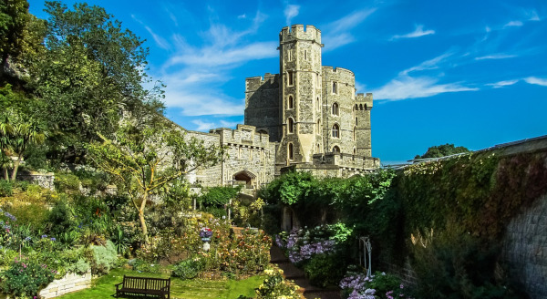
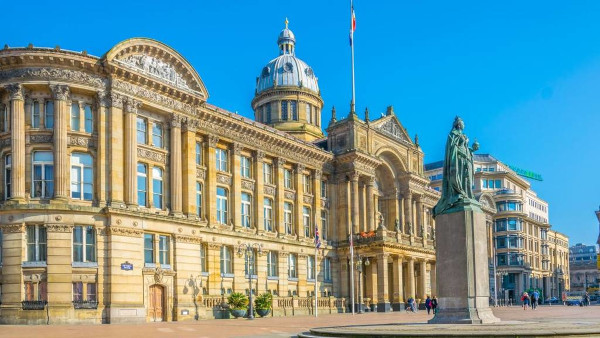
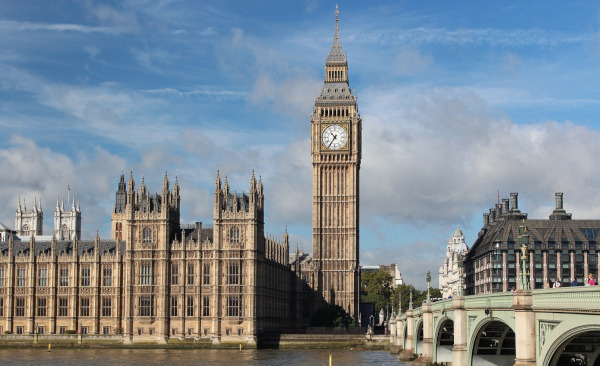
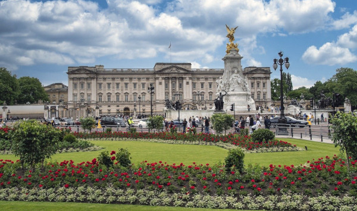
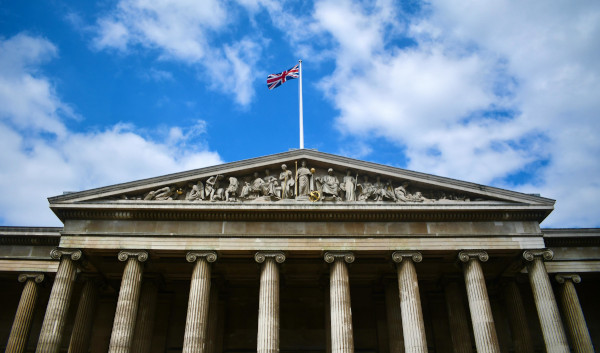

Inglaterra: História, Cultura e Paisagens Encantadoras
Maior país do Reino Unido, a Inglaterra é um dos destinos mais visados para uma viagem. Repleto de cultura, fatos históricos marcantes e personalidades influentes, o local surpreende pela variedade de atrações que tem a oferecer.
Uma ida às terras britânicas rende boas memórias de viagem e experiências incríveis. Vale conhecer os grandes centros urbanos das principais cidades do país, e também as marcantes vilas medievais do interior, que guardam muitas características dos povos que já viveram por lá.
Visto e documentação
Não é exigido visto de brasileiros para viagens de turismo para Inglaterra, com duração máxima de 3 meses. Entretanto, para entrar no país, o visitante deve apresentar uma lista de documentos que devem estar com ele na hora do desembarque. Os documentos são:
- Passaporte com data de vencimento de pelo menos seis meses;
- Landing card: esse é um formulário exigido para todo cidadão não-europeu. Ele é distribuído no avião e também na imigração. Você deve preenchê-lo corretamente e o apresentar junto com seu passaporte;
- Comprovação de vínculo com o Brasil: o objetivo é provar que você está somente viajando a turismo e não pretende ficar por lá. Então, alguns documentos que são considerados: carta do seu empregador ou comprovação de contratação como carteira de trabalho; caso seja empresário, o contrato social da sua empresa; comprovante de matrícula em alguma instituição de ensino, entre outros;
- Comprovação financeira: você deve comprovar que tem dinheiro para custear a viagem. Desta forma, eles solicitam extrato bancário, contra-cheques, declaração de imposto de renda, entre outros;
- Comprovação de viagem: é necessário comprovar que é só uma viagem temporária e você pretende sair do país logo. Entre os documentos aceitos estão passagem de retorno, reserva de hotéis na Inglaterra ou carta de quem vai lhe receber, comprovantes de compra de passeios, etc.
Moeda
A moeda na Inglaterra é a libra. Ela tem uma cotação bem alta, em relação ao real brasileiro. Aproximadamente, 1 libra vale 7,34 reais, mas pode variar bastante.
Por isso, é fundamental que você se programe durante uma viagem para a Inglaterra e lembre-se de trocar seu dinheiro ao entrar e sair do país, principalmente se você estiver circulando por países da Europa, cuja moeda é o euro.
Melhor época para viajar
A melhor época para viajar para a Inglaterra é de meados da primavera e até o final do verão. Nessa época que vai mais ou menos de maio a setembro, as temperaturas são bem mais agradáveis e chove menos.
Assim, com os dias de sol, você conseguirá aproveitar mais a cidade, caminhar tranquilamente pelas ruas e explorar mais os principais pontos turísticos, principalmente aqueles ao ar livre. Nos demais meses você terá que encarar um friozinho, além de tempo cinza e chuvoso.
Idioma
O idioma oficial da Inglaterra é o inglês. Especificamente, o dialeto falado na Inglaterra é conhecido como inglês britânico ou inglês britânico padrão (British English ou Standard British English). No entanto, é importante notar que existem variações regionais dentro da Inglaterra, como o inglês cockney em Londres ou o inglês do norte (Northern English) em regiões como Manchester e Liverpool.
Atrações para você conhecer
1. Castelo de Windsor

Fonte: Pixabay
Pertinho da capital inglesa, a apenas 40 km de Londres, o Castelo de Windsor é uma das atrações da Inglaterra imperdíveis. Residência oficial da Família Real durante o verão, o castelo era um dos lugares preferidos da rainha Elizabeth II, e não é difícil entender por quê!
Os jardins ao redor da construção são belíssimos e estão sempre bastante floridos. Na parte interior do castelo, cômodos conservados há séculos com todo o luxo e conforto dignos da monarquia mais tradicional do mundo. Cenário de importantes episódios históricos do país, com mais de 1.000 anos de história, o Castelo de Windsor recebe, até hoje, cerimônias oficiais e chefes de Estado de todos os cantos do mundo.
Algumas partes do castelo estão abertas a visitação, como os quartos do rei George IV, uma casa de bonecas que pertenceu à rainha Mary, um dos terraços e o roseiral.
2. Museu de Birmingham

Um dos museus mais importantes da Inglaterra, o Museu de Birmingham, a 200 km de Londres, reúne em seu acervo coleções de objetos de diferentes períodos históricos, como da antiguidade romana e grega.
Fundado em 1885, o museu é um dos mais antigos do país e inclui uma ampla galeria de arte, com obras de artistas do período vitoriano e pinturas pré-rafaelitas, do século XIX.
3. Big Ben

Fonte: Pixabay
O Big Ben, um dos maiores símbolos da Inglaterra, é uma parada obrigatória para os turistas que visitam o país. A famosa torre do relógio foi erguida por volta de 1844, como parte do projeto de reconstrução das Casas do Parlamento, após um devastador incêndio no Palácio de Buckingham.
Um fato curioso, é que o nome “Big Ben” refere-se ao maior sino do relógio, que pesa mais de 13 toneladas, e não a torre. Suas marcantes badaladas a cada hora ecoam por toda Londres desde 1859, tornando-se um marco da cidade. À noite, os mostradores do relógio se iluminam, conferindo ao Big Ben uma beleza única.
4. Palácio de Buckingham em Londres

O Palácio de Buckingham não poderia faltar na nossa lista de pontos turísticos na Inglaterra. Localizado no coração de Londres, ele é a residência oficial da Família Real Britânica desde 1837, quando a Rainha Vitória ascendeu ao trono.
Construído no início do século XVIII como casa particular, o palácio era conhecido como Buckingham House. Em 1761, ele foi adquirido pelo rei George III e passou por várias expansões e reformas até se tornar a atração turística que vemos hoje.
5. Museu Britânico

Fonte: Pexels
Fundado em 1753 com a coleção do médico e naturalista Sir Hans Sloane, o Museu Britânico foi um dos pontos turísticos na Inglaterra mais visitados em 2023, registrando cerca de 5,8 milhões de visitas.
Desde a sua inauguração, o museu expandiu sua coleção por meio de aquisições, doações e escavações arqueológicas. Atualmente, conta com mais de 8 milhões de artefatos históricos que incluem desde antigos hieróglifos egípcios e múmias até tesouros romanos.
O Museu Britânico é um verdadeiro templo de história e cultura, que guarda verdadeiros tesouros como as esculturas da Grécia Antiga, a famosa Pedra de Roseta e as peças de xadrez de Lewis do século XII.